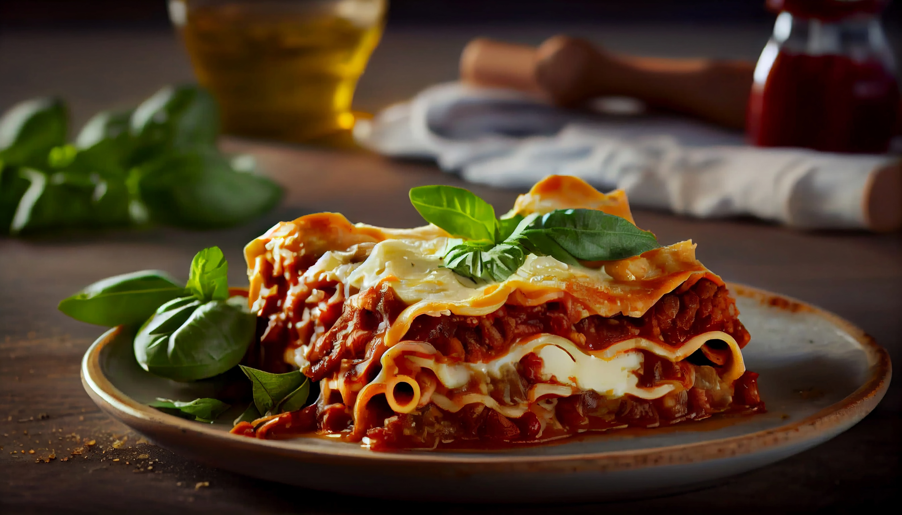

Lasanha à Bolonhesa
A receita de lasanha de carne moída é um prato clássico, muito amado e muito fácil de preparar. Também conhecida como lasanha à bolonhesa, pela sua origem em Bolonha, na Itália, essa receita conquistou o mundo! Este prato é uma verdadeira celebração de sabores com camadas intercaladas de massa, molho de carne moída e queijo derretido, resultando em uma combinação deliciosa e irresistível!
Tempo: 2 Horas
Rendimento: 6 Porções
Dificuldade: Médio
Ingredientes
Para o molho à Bolonhesa:
- 500 g de patinho moído
- ½ xícara (chá) de cebola picada
- ⅔ de xícara (chá) de cenoura picada
- ⅔ de xícara (chá) de salsão picado
- 1 xícara (chá) de leite
- 1 xícara (chá) de vinho branco seco
- 1 lata de tomate pelado (com o líquido)
- 1 colher (sopa) de óleo
- 3 colheres (sopa) de manteiga
- noz-moscada ralada na hora a gosto
- sal e pimenta-do-reino moída na hora a gosto
Para o molho branco:
- 1 litro de leite
- 3 colheres (sopa) de manteiga
- 3 colheres (sopa) de farinha de trigo
- 1 pitada de noz-moscada ralada na hora
- sal e pimenta-do-reino moída na hora a gosto
Modo de Preparo
Molho Bolonhesa:
- Numa panela média, coloque o óleo, a manteiga e leve ao fogo médio. Quando a manteiga derreter, adicione a cebola e refogue, mexendo sempre, até ficar transparente. Junte a cenoura e o salsão picados, e refogue por 2 minutos, mexendo sem parar.
- Acrescente a carne moída e misture com um garfo. Tempere com sal e pimenta-do-reino e refogue até que a carne perca a cor rosada.
- Junte o leite, tempere com noz-moscada ralada na hora a gosto, e mexa até que evapore completamente. Adicione o vinho e deixe cozinhar até secar.
- Baixe o fogo, junte os tomates pelados (com o líquido da lata) e deixe cozinhar por 3 horas, com a panela tampada, mexendo de vez em quando. O fogo deve estar baixíssimo, caso contrário, o molho irá grudar no fundo da panela. A medida que for secando, adicione um pouquinho de água fervente.
Molho Branco:
- Numa panela média, coloque a manteiga e leve ao fogo baixo. Quando derreter, acrescente a farinha de trigo e mexa por 2 minutos com uma colher de bambu ou espátula de silicone.
- Retire a panela do fogo e, sem parar de mexer, acrescente metade do leite. Mexa vigorosamente e, de preferência, com um batedor de arame para desmanchar os gruminhos de farinha. Volte a panela ao fogo médio, junte o restante do leite e continue mexendo até ferver.
- Quando começar a ferver, abaixe o fogo e tempere com sal, pimenta-do-reino e noz-moscada. Deixe cozinhar por cerca de 12 minutos, mexendo de vez em quando até o molho engrossar levemente (ele deve ficar ainda líquido pois irá hidratar a massa e engrossar durante o cozimento no forno).
Montagem:
- Preaqueça o forno a 180 ºC (temperatura média).
- Quebre as folhas de massa de lasanha uma a uma, ao meio, formando 2 quadrados (dessa forma fica mais fácil cortar e servir a lasanha sem que ela despedace).
- Numa travessa refratária de 32 cm x 24 cm, coloque um pouco de molho branco no fundo e, em seguida, uma camada de molho à bolonhesa. Sobre os molhos, coloque uma camada de massa cobrindo todo o fundo da travessa.
- Sobre a primeira camada de massa, espalhe um pouco do molho à bolonhesa. Por cima do molho à bolonhesa, regue com um pouco do molho branco. Cubra com mais uma camada de massa e repita o processo, até finalizar com uma camada de molho à bolonhesa e molho branco.
- Polvilhe com o queijo parmesão ralado e leve ao forno preaquecido para assar por cerca de 15 minutos ou até gratinar. Sirva a seguir.